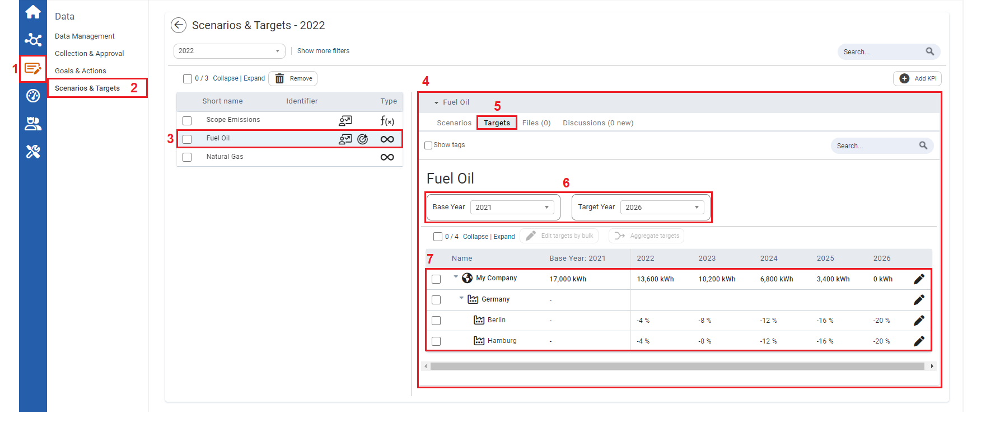

| 1 | On the left navigation panel, click Data. |
| 2 | Click Scenarios & Targets . |
| 3 | Select either a numeric or formula KPI, with a target icon. This indicates the KPI has a target value assigned to it. |
| 4 | Information on the KPI will display to the right. |
| 5 | Click the Targets tab. |
| 6 | Select a Base Year for which you have approved values (baseline, etc.) that you are not likely to change, and select a Target Year. Your planning period is from the base year to the target year. |
| 7 | The Organizational Units and their target values display. |